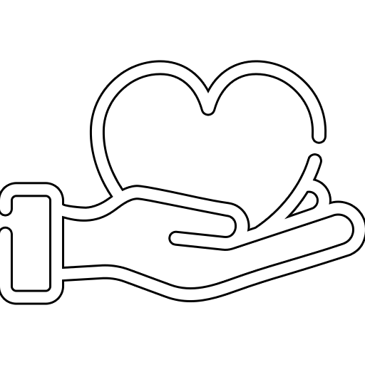
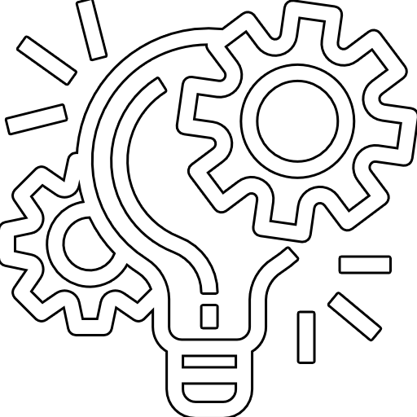

-

MES PASSIONS
J'aime l'informatique, les jeux-videos et le cinéma.
L'e-sport est certainement l'un des mes centre d'interets le plus prenant! Accompagner une équipe vers la victoire est exaltant!
J'ai aussi et surtout eu un gros coup de coeur pour l'editing vidéo,
la plupart de mes travaux sont disponibles sur YOUTUBE.
-
MON PARCOURS
Je suis étudiant en informatique à l'IUT de Montreuil,
en Alternance à l'IGNfab. Après avoir suivi les cours préparatoire
à l'ESIEE, j'ai pris goût à l'informatique.
Je souhaite donc, désormais, devenir ingénieur en informatique spécialisé dans la sécurité info.
-

MES PROJETS
Après avoir beaucoup joué au jeux-vidéos plus jeune, j'aime maintenant
beaucoup en faire! Mes principaux projets sont des jeux codés sur JavaFX !
Mais aussi énormément de projets visant à en apprendre davantage sur différents domaines informatiques
non étudiés en cours.